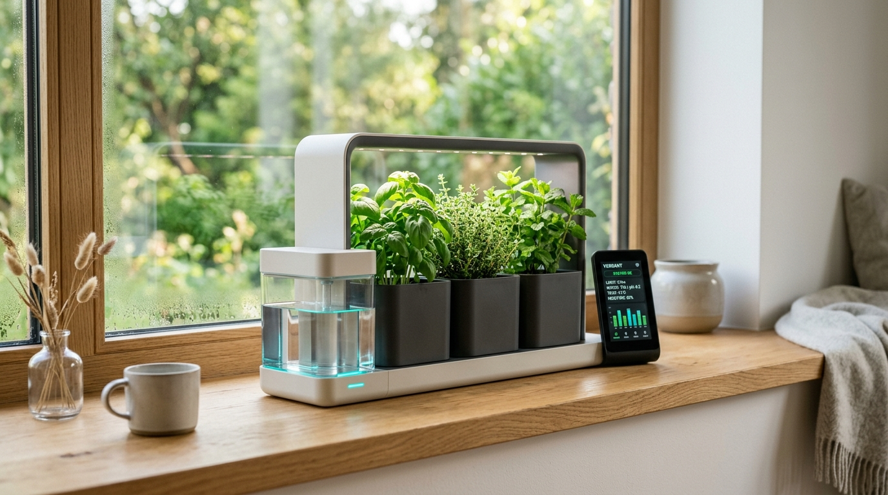
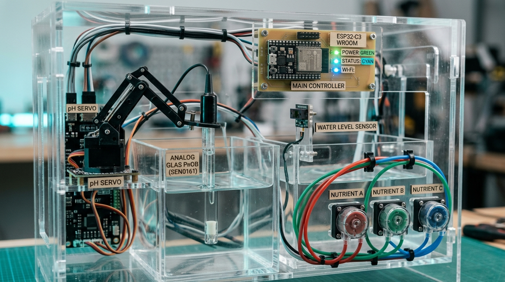
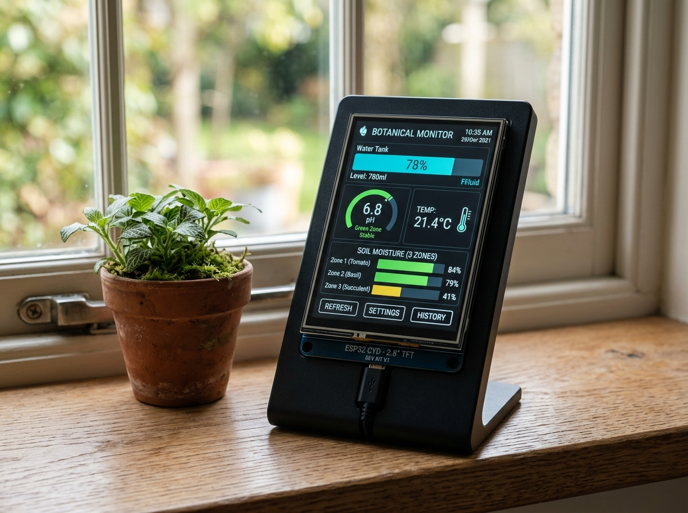
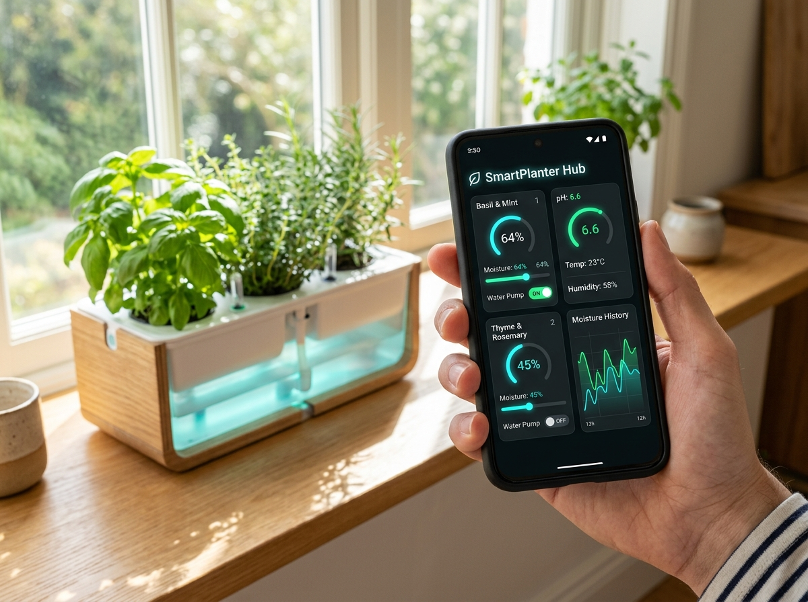

SmartPlanter: Autonomous Modular Botanics & Dual-Stage Hydroponics
An advanced embedded ecosystem pairing an ESP32-C3 Super Mini core with a wireless Cheap Yellow Display (CYD) touch terminal and an embedded SoftAP web dashboard. Engineered with motorized servo pH bulb protection, laser Time-of-Flight reservoir sensing, and hot-swappable 4-zone soil irrigation.

The Engineered Modular System
Unlike monolithic commercial planters, SmartPlanter is designed as an interlocking matrix of specialized hardware modules. Each subsystem operates autonomously with dedicated failsafes and telemetry reporting.
Dual-Stage Hydroponic Reservoirs
Separates raw freshwater storage from chemical conditioning. Tank 1 features a non-contact Time-of-Flight (VL53L0X) laser sensor for millimeter-accurate distance measurement immune to condensation, along with a waterproof DS18B20 OneWire temperature sensor. An active charcoal pipeline and transfer pump replenish Tank 2 on demand.
- Laser Sensing: VL53L0X I2C (GPIO6 / GPIO7)
- Level Range: 30mm (100%) – 220mm (0%)
- Purification: Activated Carbon Flow In-Line
- Transfer Pump: Relay Actuated (GPIO4)
Motorized Servo pH Probe Lifter
Glass analog pH probes degrade and drift rapidly if left continuously submerged in nutrient salts. SmartPlanter introduces an automated PWM Servo Arm Mechanism: the probe rests safely retracted at 15° in air/cap, swings down to 115° into the liquid for a timed 6-second stabilized read cycle, and instantly lifts back out!
- Servo Lift Pin: PWM Servo (GPIO5)
- Motion Angles: Retracted: 15° | Submerged: 115°
- Sampling Window: 6000ms stabilized reading
- Analog Input: ADC1 CH0 (GPIO0, 12-bit)
Nutrient & Buffering Dosing Triad
Reservoir 2 integrates three independent micro-peristaltic dosing pumps for targeted chemical balancing: Nutrient A (Nitrogen & Micronutrients), Nutrient B (Phosphorus & Potassium), and pH Adjuster. Coordinated with an optical Turbidity/TDS sensor to prevent salt precipitation.
- Pump A (Micro): Shift Register / Direct GPIO
- Pump B (Macro): Independent Calibrated Dosing
- Pump C (pH Buff): Auto Acid / Base Compensation
- Turbidity Sensor: ADC1 CH1 (GPIO1)
Hot-Swappable 4-Zone Soil Pots
Supports 1 to 4 modular plant containers. Features automatic disconnect sensing via ADC voltage threshold
(MOISTURE_DISCONNECT_ADC = 3900). When plugged in, each pot gets independent capacitive moisture
readings, individual target humidity setpoints (10–95%), and a dedicated silent micro-diaphragm pump.
- ADC Inputs: GPIO2 (Zone 1), GPIO3 (Zone 2)
- Auto Detection: Hardware probe disconnect alert
- Target Moisture: Individually programmable %
- Safety Watchdog: 60-second pump cutoff limit
Clear Acrylic Rig & Subsystem Integration
The prototype combines laser-cut clear acrylic compartments, an ESP32-C3 Super Mini carrier board, status LED bar, the motorized pH robotic arm, and three color-coded peristaltic pumps. Every fluid circuit is isolated to avoid electrical ground loops and sensor cross-talk.
/update plus ArduinoOTA for instantaneous IDE code uploads over WiFi.

ESP32 CYD Touch Companion Display
A dedicated bedside or window bench console built on the ESP32-2432S028R ("Cheap Yellow Display"). Communicating directly with the planter via high-speed, zero-router ESP-NOW at 2.4 GHz.

Browser & Smartphone Web Dashboard
Hosted entirely inside the ESP32-C3 flash memory. Connect to the local "SmartPlanter" WiFi Access Point from any smartphone or laptop to access real-time controls, graphs, thresholds, and drag-and-drop OTA updates.

Real-Time Telemetry Stream
Dynamic asynchronous REST & WebSocket poll loop
Delivers live visual gauges for water tank levels, fluid temperature, pH levels with safe zone indicators, and multi-zone soil moisture graphs without refreshing the browser.
Granular Manual Overrides
Direct control over all physical actuators
Manually cycle the transfer pump, trigger a motorized pH servo dipping read sequence, pulse nutrient dosing pumps, or manually water any individual plant zone with 1-click controls.
Dual OTA Wireless Firmware Updater
Web Drag-and-Drop & Arduino IDE Network Upload
Update both the ESP32-C3 core controller and CYD firmware completely over-the-air. No need to unscrew the planter casing or connect USB cables once deployed on the window sill.
Hardware Pump Safety Watchdog
60-second hardware auto-cutoff timer
Every pump command is guarded by PUMP_SAFETY_MAX_RUN_MS = 60000.
Even if a network packet drops or browser crashes, the pumps automatically shut down to prevent overflows.
Live Hardware Simulation Laboratory
Test the planter's automated behaviors in real time! Adjust soil moisture to see auto-irrigation trigger, dip the motorized pH sensor arm, and inspect live simulated ESP-NOW telemetry packets.
Firmware Architecture & Protocol Specs
Clean, modular C++ implementation designed for robustness. Inspect the core protocol structures, sensor abstraction controllers, and pinout mapping.
// ESP-NOW Protocol Magic Identifier ('P','L','N','T')
#define ESPNOW_MAGIC 0x504C4E54
#define ESPNOW_DEFAULT_CHANNEL 1
// Packed Telemetry Payload (ESP32-C3 Base -> CYD Display)
#pragma pack(push, 1)
struct C3TelemetryPayload {
// Reservoir 1 (Fresh Water)
float waterTempC;
uint8_t waterLevelPercent;
uint16_t waterDistanceMm;
uint8_t transferPumpActive; // bool: 1=ON, 0=OFF
// Reservoir 2 (Nutrient Mix & Chemistry)
float phValue;
float phVoltage;
uint16_t turbidityPpm;
uint8_t phDipping; // bool: 1=Servo reading cycle in progress
uint8_t dosingPumpA; // bool: Micro nutrient pump
uint8_t dosingPumpB; // bool: Macro nutrient pump
uint8_t dosingPumpC; // bool: pH buffer pump
// Modular Planter Zones 1 to 4
struct {
uint8_t connected; // bool: probe detected
uint8_t moisturePercent; // 0..100%
uint8_t targetMoisture; // 10..95%
uint8_t pumpActive; // bool: 1=Watering, 0=Idle
} planters[4];
// System Status
uint32_t uptimeMs;
int8_t wifiRssi; // approximate signal strength
uint8_t autoModeActive; // 1=Auto-irrigation active
};
#pragma pack(pop)// ESP32-C3 SUPER MINI PINOUT MAPPING
#define PIN_I2C_SDA 6 // VL53L0X Laser ToF Data
#define PIN_I2C_SCL 7 // VL53L0X Laser ToF Clock
#define PIN_SERVO_PH 5 // Motorized pH Probe PWM Servo
#define PIN_ADC_PH 0 // GPIO0 (ADC1 CH0) - Analog pH Glass Probe
#define PIN_ADC_TURBIDITY 1 // GPIO1 (ADC1 CH1) - Turbidity / TDS Sensor
#define PIN_MOISTURE_1 2 // GPIO2 (ADC1 CH2) - Planter 1 Soil Moisture
#define PIN_MOISTURE_2 3 // GPIO3 (ADC1 CH3) - Planter 2 Soil Moisture
#define PIN_RELAY_IRRIG_1 4 // Planter 1 Micro Diaphragm Pump
#define PIN_RELAY_IRRIG_2 10 // Planter 2 Micro Diaphragm Pump
// MOTORIZED SERVO ARM THRESHOLDS
#define SERVO_POS_UP 15 // Angle in degrees for retracted probe
#define SERVO_POS_DOWN 115 // Angle in degrees for submerged probe
#define SERVO_DIP_DURATION_MS 6000 // Submerge duration for stabilized reading
// PUMP WATCHDOG FAILSAFE
#define PUMP_SAFETY_MAX_RUN_MS 60000 // 60s hard auto-cutoff for all pumps// Dual-Stage ToF Distance & Soil ADC Filter
uint16_t SensorController::getWaterDistanceMm() {
VL53L0X_RangingMeasurementData_t measure;
lox.rangingTest(&measure, false);
if (measure.RangeStatus != 4) { // Valid phase measurement
return measure.RangeMilliMeter;
}
return lastValidDistanceMm; // Retain filtered fallback
}
// Planter Disconnect Auto-Detection Logic
void SensorController::updateSoilMoisture() {
for (int i = 0; i < 4; i++) {
int rawAdc = analogRead(moisturePins[i]);
if (rawAdc > MOISTURE_DISCONNECT_ADC) {
planters[i].connected = false;
planters[i].moisturePercent = 0;
} else {
planters[i].connected = true;
planters[i].moisturePercent = map(rawAdc, MOISTURE_DRY_ADC, MOISTURE_WET_ADC, 0, 100);
}
}
}// Motorized Servo Dip Sequence Handler
void ActuatorController::startPhDipSequence() {
if (phDipActive) return;
phDipActive = true;
phDipStartTime = millis();
servoPh.write(SERVO_POS_DOWN); // Submerge probe into Tank 2
}
void ActuatorController::update() {
// Check if 6000ms measurement cycle has elapsed
if (phDipActive && (millis() - phDipStartTime >= SERVO_DIP_DURATION_MS)) {
servoPh.write(SERVO_POS_UP); // Retract probe safely into air/cap
phDipActive = false;
}
// Safety watchdog: enforce 60-second pump cutoff
checkPumpSafetyCutoff();
}